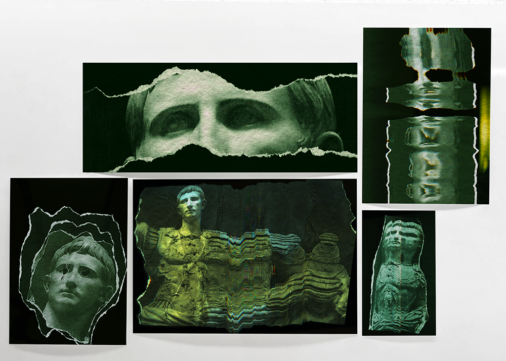
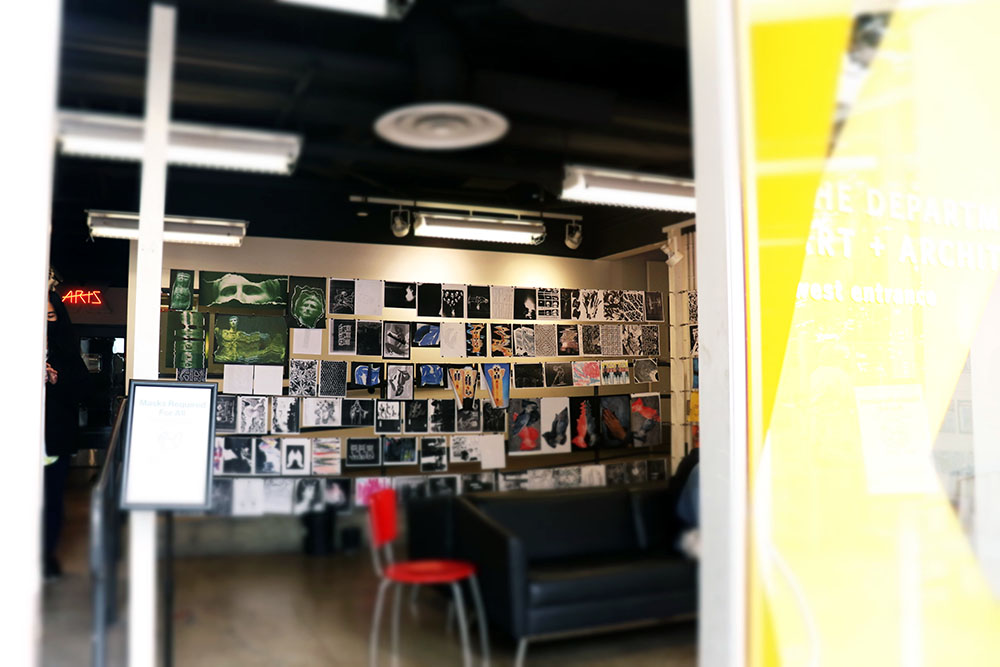
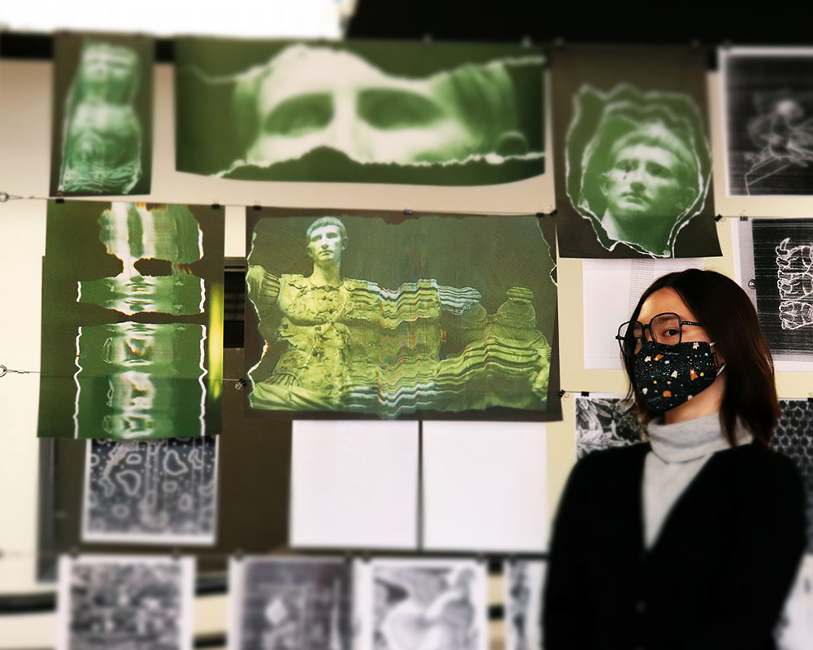
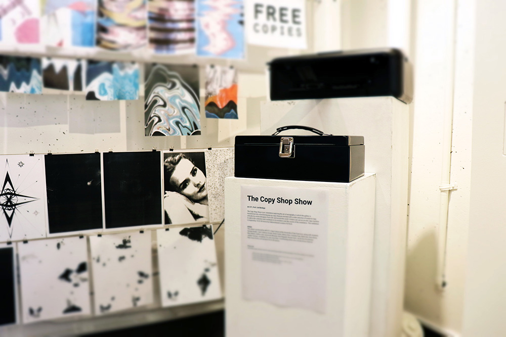

❮
❯
Fall 2021. | Print Series.
This series of five connected prints uses the technique of distortive xerography to distort an "iconic" image - the famed Prima Porta statue of Augustus, the first emperor of Rome [link to original photograph of the statue under creative commons license]. Each print symbolizes a different aspect of the effects and legacy of empire.
"Stared Down" represents the supreme power and authority vested in leaders, and the public disconnect between the highest leadership and lowest subjects.
"Tattered" represents the disintegration of empire over time, forgotten identities, and fragments of what remain.
"Decapitated" represents the harsh consequences and fates of empire; with its with eyes bored out, ‘falling’ into dark space, this demonstrates what the enemies of Augustus would have liked to do to him, and what he did in turn to them.
"Split" depicts one figure emerging from the other, representing the production of heirs and the eventual deterioration in lineage over time.
"Poisoned" represents the alleged rumors of Livia, the wife of Augustus, poisoning her husband, and illustrates the eventual decay of the mortal body.
The green overtones throughout the series represent the violence complicit in the wealth of empire. Reflective of the green color of American money, I sought to draw parallels between the harshness of Imperial Rome and the United States, focusing on the futility of rule and eventual fall to create a nihilistic atmosphere.
This project involved a long period of experimentation - not only dragging photos across the xerox machine to produce waves, but the physical ripping, tearing, or crumpling photos to produce a textural effect. Some of these effects are present in the final version. "Poisoned" was soaked in coffee and dried to dye and deteriorate the paper.